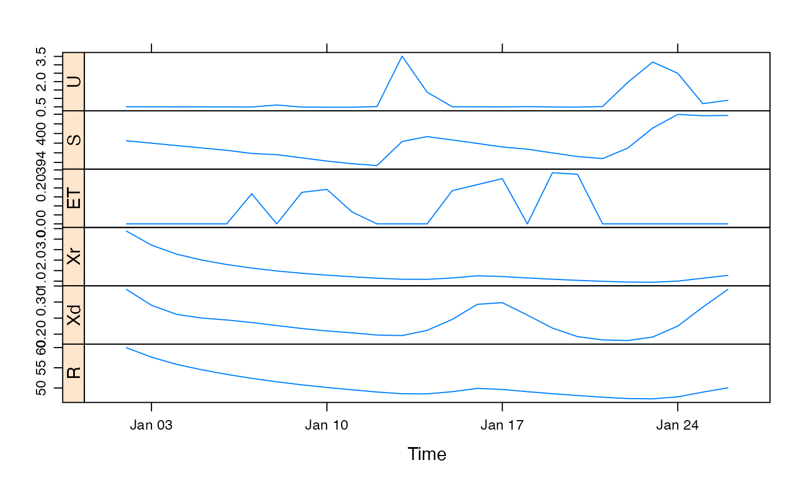
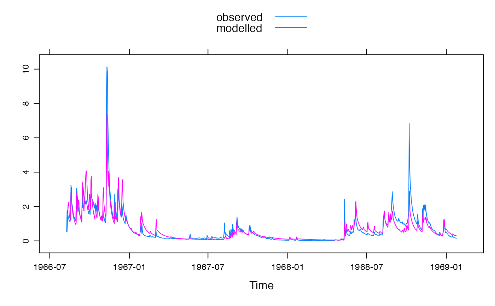
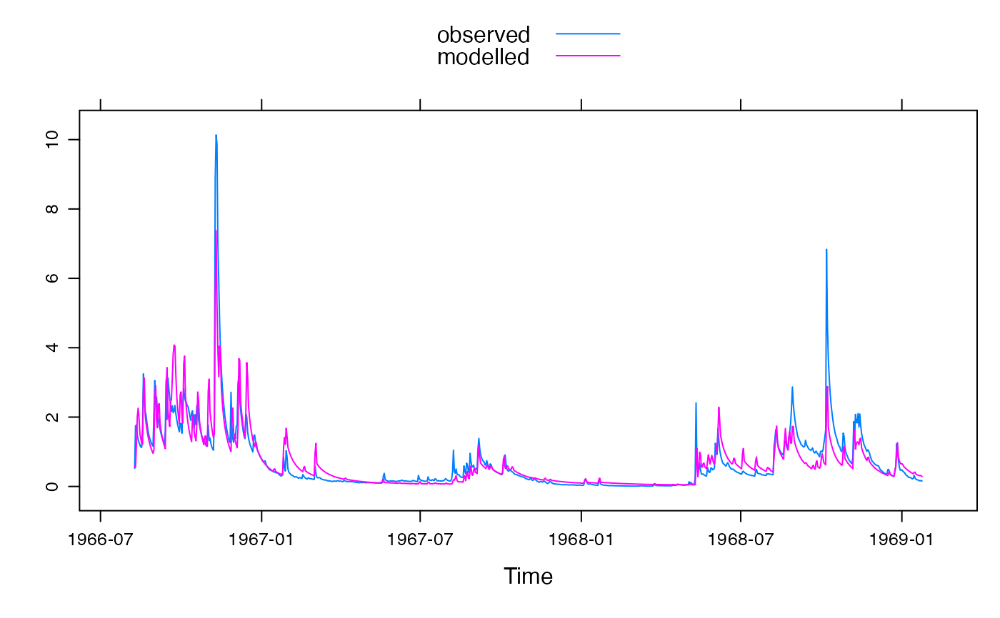

GR4J model (modele du Genie Rural a 4 parametres Journalier).
gr4j.sim(
DATA,
x1,
etmult = 1,
S_0 = 0.5,
return_state = FALSE,
transformed = FALSE
)
gr4jrouting.sim(
U,
x2,
x3,
x4,
R_0 = 0,
split = 0.9,
return_components = FALSE,
epsilon = hydromad.getOption("sim.epsilon"),
transformed = FALSE
)Arguments
- DATA
time-series-like object with columns P (precipitation, mm) and E (potential evapo-transpiration, mm).
- x1
maximum capacity of the production store (mm).
- etmult
Multiplier for the
Einput data.- S_0
Initial soil moisture level as fraction of
x1.- return_state
to return the series U, S (storage) and ET (evapotranspiration).
- transformed
transform parameters before use to improve identifiability. They can be untransformed using
gr4j.transformpar- U
effective rainfall series.
- x2
groundwater exchange coefficient (mm).
- x3
one day ahead maximum capacity of the routing store (mm).
- x4
time base of unit hydrograph UH1 (time steps).
- R_0
Initial groundwater reservoir level as fraction of
x3.- split
Fraction to go into quick flow routing, usually fixed at 0.9.
- return_components
to return the series Xr, Xd and R (reservoir level).
- epsilon
values smaller than this in the output will be set to zero.
Value
the simulated effective rainfall, a time series of the same length as the input series.
Details
The default parameter ranges were taken from the "80 given in Perrin et. al. (2003).
References
Perrin, C., C. Michel, et al. (2003). "Improvement of a parsimonious model for streamflow simulation." Journal of Hydrology 279(1-4): 275-289
http://www.cemagref.fr/webgr/Modelesgb/gr4j/fonctionnement_gr4jgb.htm
See also
hydromad(sma = "gr4j", routing = "gr4jrouting") to
work with models as objects (recommended).
Examples
## view default parameter ranges:
str(c(
hydromad.getOption("gr4j"),
hydromad.getOption("gr4jrouting")
))
#> List of 5
#> $ x1 : num [1:2] 100 1200
#> $ etmult: num 1
#> $ x2 : num [1:2] -5 3
#> $ x3 : num [1:2] 20 300
#> $ x4 : num [1:2] 1.1 2.9
data(HydroTestData)
mod0 <- hydromad(HydroTestData, sma = "gr4j", routing = "gr4jrouting")
mod0
#>
#> Hydromad model with "gr4j" SMA and "gr4jrouting" routing:
#> Start = 2000-01-01, End = 2000-03-31
#>
#> SMA Parameters:
#> lower upper
#> x1 100 1200
#> etmult 1 1 (==)
#> Routing Parameters:
#> lower upper
#> x2 -5.0 3.0
#> x3 20.0 300.0
#> x4 1.1 2.9
## example from
## http://www.cemagref.fr/webgr/Scilab/CONT_EN/HELP_HYDROGR/c_GR4J.htm
dat <-
cbind(
P = c(
0, 0, 0, 0, 0, 0.04, 0.59, 0.03, 0.01, 0.16, 0.37, 8.76, 2.65,
0.05, 0.02, 0.02, 0.38, 0.00, 0.02, 0.46, 4.46, 7.71, 5.71, 0.79, 1.33
),
E = c(
0, 0, 0, 0, 0, 0.24, 0.24, 0.24, 0.24, 0.24, 0.25, 0.25, 0.26,
0.27, 0.28, 0.32, 0.33, 0.34, 0.35, 0.36, 0.36, 0.37, 0.37, 0.38, 0.38
)
)
datz <- zoo(dat, as.Date("2000-01-01") + 1:nrow(dat))
modz <- hydromad(datz,
sma = "gr4j", routing = "gr4jrouting",
x1 = 665, x2 = 1.18, x3 = 90, x4 = 3.8, S_0 = 0.6, R_0 = 0.7
)
xyplot(predict(modz, return_state = TRUE, return_components = TRUE),
strip = FALSE, strip.left = TRUE
)

## simulate with some arbitrary parameter values
mod1 <- update(mod0, x1 = 100, x2 = 20, x3 = 1, x4 = 10)
## plot results with state variables
testQ <- predict(mod1, return_state = TRUE)
xyplot(cbind(HydroTestData[, 1:2], gr4j = testQ))
 ############################################
## show effect of increase/decrease in each parameter
parRanges <- c(
hydromad.getOption("gr4j")[1],
hydromad.getOption("gr4jrouting")
)
parsims <- mapply(
val = parRanges, nm = names(parRanges),
FUN = function(val, nm) {
lopar <- min(val)
hipar <- max(val)
names(lopar) <- names(hipar) <- nm
fitted(runlist(
decrease = update(mod1, newpars = lopar),
increase = update(mod1, newpars = hipar)
))
}, SIMPLIFY = FALSE
)
xyplot.list(parsims,
superpose = TRUE, layout = c(1, NA),
strip = FALSE, strip.left = TRUE,
main = "Simple parameter perturbation example"
) +
latticeExtra::layer(panel.lines(fitted(mod1), col = "grey", lwd = 2))
############################################
# Example optimisation, using transformed parameters
data(Cotter)
x <- Cotter[1:1000]
# Specify gr4j model
mod0 <- hydromad(x, sma = "gr4j", routing = "gr4jrouting", transformed = TRUE)
# Use transformed parameter ranges
mod0 <- update(mod0, newpars = gr4j.transformpar(c(
hydromad.getOption("gr4j"),
hydromad.getOption("gr4jrouting")
)))
# Allow etmult to vary, because we're using temperature data instead of PET.
mod0 <- update(mod0, etmult = c(0.05, 1.5))
# Broaden a single parameter range, just as an example
mod0 <- update(mod0, x1 = gr4j.transformpar(list(x1 = c(100, 5000)))[["x1"]])
mod0
#>
#> Hydromad model with "gr4j" SMA and "gr4jrouting" routing:
#> Start = 1966-05-01, End = 1969-01-24
#>
#> SMA Parameters:
#> lower upper
#> x1 4.605 8.517
#> etmult 0.050 1.500
#> Routing Parameters:
#> lower upper
#> x2 -2.3124 1.8184
#> x3 2.9957 5.7038
#> x4 -0.5108 0.8755
## now try to fit the free parameters
set.seed(10)
fit1 <- fitByOptim(mod0)
fit1
#>
#> Hydromad model with "gr4j" SMA and "gr4jrouting" routing:
#> Start = 1966-05-01, End = 1969-01-24
#>
#> SMA Parameters:
#> x1 etmult
#> 6.0224 0.1227
#> Routing Parameters:
#> x2 x3 x4
#> -0.0004503 4.6048484 -0.5108256
#>
#> Fit: ($fit.result)
#> fitByOptim(MODEL = mod0)
#> 277 function evaluations in 6.216 seconds
summary(fit1)
#>
#> Call:
#> hydromad(DATA = x, transformed = TRUE, sma = "gr4j", routing = "gr4jrouting",
#> x1 = 6.02237, x2 = -0.00045027, x3 = 4.60485, x4 = -0.510826,
#> etmult = 0.122697)
#>
#> Time steps: 900 (0 missing).
#> Runoff ratio (Q/P): (0.7028 / 2.285) = 0.3075
#> rel bias: -0.02825
#> r squared: 0.7685
#> r sq sqrt: 0.8447
#> r sq log: 0.8456
#>
#> For definitions see ?hydromad.stats
#>
xyplot(fit1)

# Parameters in original parameter space
gr4j.transformpar(coef(fit1), back = TRUE)
#> $x1
#> [1] 412.555
#>
#> $x2
#> [1] -0.00045027
#>
#> $x3
#> [1] 99.96783
#>
#> $x4
#> [1] 1.1
#>
#> $etmult
#> [1] 0.1226971
#>
############################################
## show effect of increase/decrease in each parameter
parRanges <- c(
hydromad.getOption("gr4j")[1],
hydromad.getOption("gr4jrouting")
)
parsims <- mapply(
val = parRanges, nm = names(parRanges),
FUN = function(val, nm) {
lopar <- min(val)
hipar <- max(val)
names(lopar) <- names(hipar) <- nm
fitted(runlist(
decrease = update(mod1, newpars = lopar),
increase = update(mod1, newpars = hipar)
))
}, SIMPLIFY = FALSE
)
xyplot.list(parsims,
superpose = TRUE, layout = c(1, NA),
strip = FALSE, strip.left = TRUE,
main = "Simple parameter perturbation example"
) +
latticeExtra::layer(panel.lines(fitted(mod1), col = "grey", lwd = 2))
############################################
# Example optimisation, using transformed parameters
data(Cotter)
x <- Cotter[1:1000]
# Specify gr4j model
mod0 <- hydromad(x, sma = "gr4j", routing = "gr4jrouting", transformed = TRUE)
# Use transformed parameter ranges
mod0 <- update(mod0, newpars = gr4j.transformpar(c(
hydromad.getOption("gr4j"),
hydromad.getOption("gr4jrouting")
)))
# Allow etmult to vary, because we're using temperature data instead of PET.
mod0 <- update(mod0, etmult = c(0.05, 1.5))
# Broaden a single parameter range, just as an example
mod0 <- update(mod0, x1 = gr4j.transformpar(list(x1 = c(100, 5000)))[["x1"]])
mod0
#>
#> Hydromad model with "gr4j" SMA and "gr4jrouting" routing:
#> Start = 1966-05-01, End = 1969-01-24
#>
#> SMA Parameters:
#> lower upper
#> x1 4.605 8.517
#> etmult 0.050 1.500
#> Routing Parameters:
#> lower upper
#> x2 -2.3124 1.8184
#> x3 2.9957 5.7038
#> x4 -0.5108 0.8755
## now try to fit the free parameters
set.seed(10)
fit1 <- fitByOptim(mod0)
fit1
#>
#> Hydromad model with "gr4j" SMA and "gr4jrouting" routing:
#> Start = 1966-05-01, End = 1969-01-24
#>
#> SMA Parameters:
#> x1 etmult
#> 6.0224 0.1227
#> Routing Parameters:
#> x2 x3 x4
#> -0.0004503 4.6048484 -0.5108256
#>
#> Fit: ($fit.result)
#> fitByOptim(MODEL = mod0)
#> 277 function evaluations in 6.216 seconds
summary(fit1)
#>
#> Call:
#> hydromad(DATA = x, transformed = TRUE, sma = "gr4j", routing = "gr4jrouting",
#> x1 = 6.02237, x2 = -0.00045027, x3 = 4.60485, x4 = -0.510826,
#> etmult = 0.122697)
#>
#> Time steps: 900 (0 missing).
#> Runoff ratio (Q/P): (0.7028 / 2.285) = 0.3075
#> rel bias: -0.02825
#> r squared: 0.7685
#> r sq sqrt: 0.8447
#> r sq log: 0.8456
#>
#> For definitions see ?hydromad.stats
#>
xyplot(fit1)

# Parameters in original parameter space
gr4j.transformpar(coef(fit1), back = TRUE)
#> $x1
#> [1] 412.555
#>
#> $x2
#> [1] -0.00045027
#>
#> $x3
#> [1] 99.96783
#>
#> $x4
#> [1] 1.1
#>
#> $etmult
#> [1] 0.1226971
#>